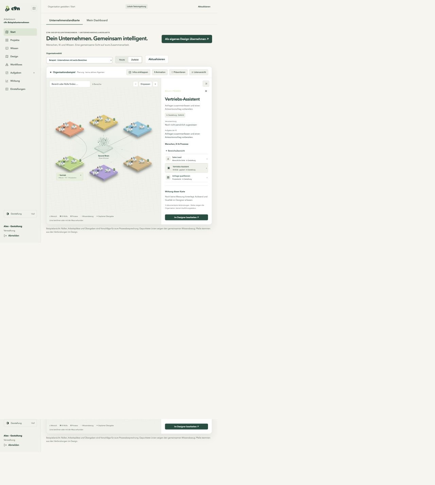
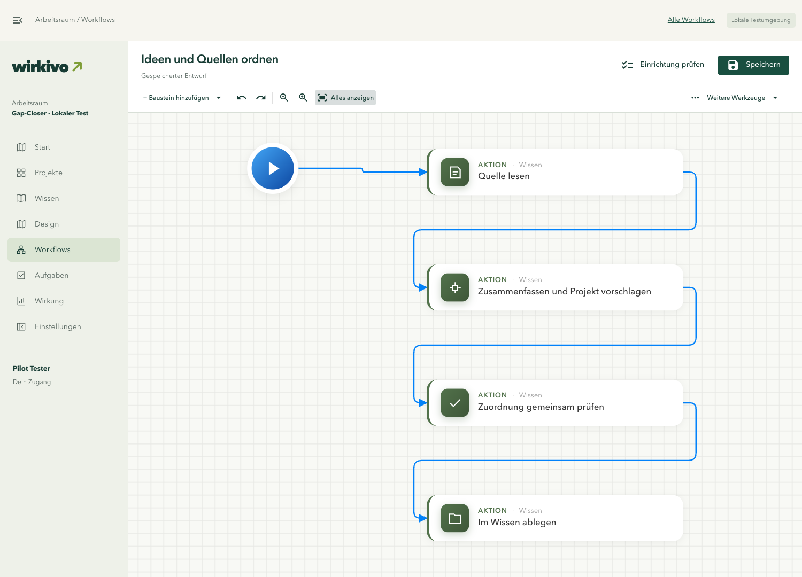
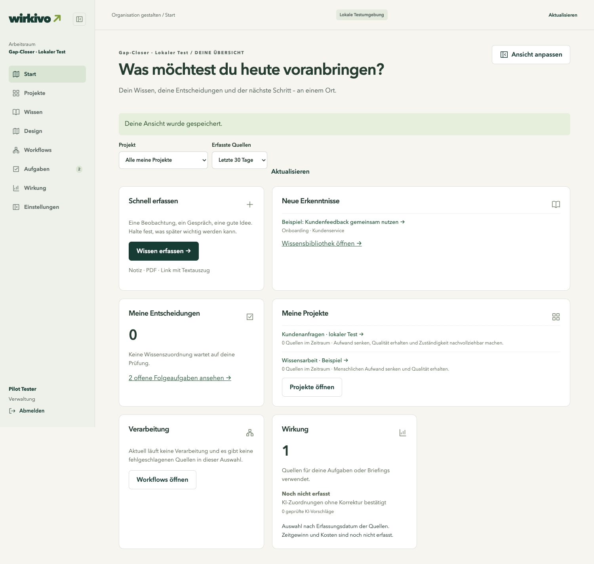

Work internally
Design, knowledge and workflows run on your infrastructure. Use your own models or providers you choose. A connection to the c9n community is not required.
ORGANISATION · KNOWLEDGE · WORKFLOWS · IMPACT
A shared picture of who does what. Workflows your team can review. Measurements that show whether the change is worth keeping.
Self-hosted alpha · guided pilot enquiries · application source currently private

01 / DESIGN THE WORK
Bring people, AI roles and handovers into one company map. Compare today with your intended operating model. Select a role to discuss its purpose, responsibilities and decisions.
02 / MAKE IT REPEATABLE
Use the process designer to agree on the work, then configure a supported automation in the Standard or Advanced editor. Keep human judgement explicit.
Explore the knowledge workflow →
03 / KNOW WHAT NEEDS YOU
Capture ideas, review their meaning and put them to work. Your personal dashboard brings sources, decisions, projects and follow-up work together.
See another use case →
04 / MEASURE THE DIFFERENCE
Define what quality means. Record the baseline. Include review effort and rework. Keep the source, period and sample size with the result.
Real screenshots and a documented local test scope.
Supported workflows, planned integrations and open questions are named separately.
Customer savings will be published only with reviewed evidence and permission.
WHY c9n?
c9n stands for cooperation. There are exactly nine letters between the first c and the final n in “cooperation”. That gives us c9n.
The name reflects our purpose: people, knowledge and AI working together. Within your organisation – and, if you choose, with a community sharing experience, ideas and spare computing capacity.
Explore our brand →Pronounced C-nine-N
BUILDING TOGETHER
The community starts with people: discussing processes, sharing experience and improving c9n together. As an optional extension, we want to make spare GPU capacity useful to others.
Design, knowledge and workflows run on your infrastructure. Use your own models or providers you choose. A connection to the c9n community is not required.
The idea: share selected models on your GPU when capacity is available. You decide who can use them, when and within which limits. Sharing should be pausable at any time.
Another team could send an explicitly approved model request to your server – or you could use theirs. Not every task needs the largest model.
The plan is a small cloud gateway for coordination. Internal users, projects and knowledge stay in your installation. A community request sends its selected inputs to the gateway and the chosen model operator. Participation is intended to be off by default.
Our credit concept: providing confirmed computing work earns credit towards model requests from others. Model, effort and quality should matter. We will develop the rules and accounting with the community; a usable credit system is not available yet.
Today: The central gateway foundation is deployed. GPU sharing between independent installations and credits are not publicly available yet. Internal operation remains independent.
RUN IT INTERNALLY
Design, knowledge and workflows run internally. The planned community gateway connects only explicitly approved model requests between installations.
Community sharing and credits are still in development. Internal operation does not require a community connection.
Docker configuration and instructions for Linux amd64. Pilot customers receive the application image separately. This package alone does not contain a runnable application.
Download installer ↓Guided alpha testing · no automatic updates
Request pilot access to the application image →LET'S MAKE ONE PROCESS BETTER
Tell us where work gets stuck. Together we can assess whether the current product supports a useful pilot. Scope, timing and price are agreed individually.
English and German conversations are welcome.
YOUR NEXT STEP
Tell us briefly what you would like to improve. Your enquiry goes to Daniel Jordan.
One specific process is enough to start. We will agree on scope and pricing together.